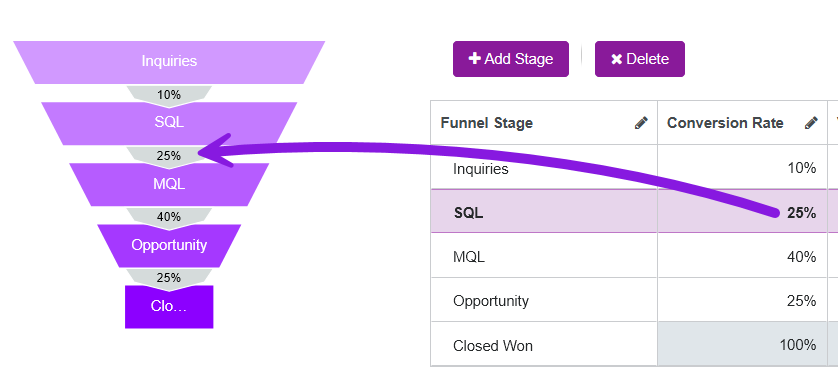
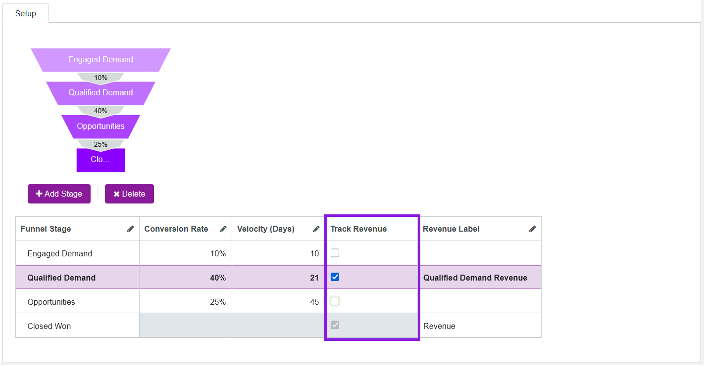
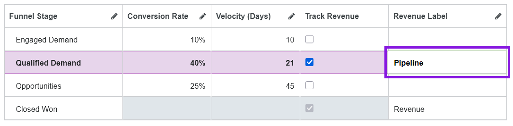
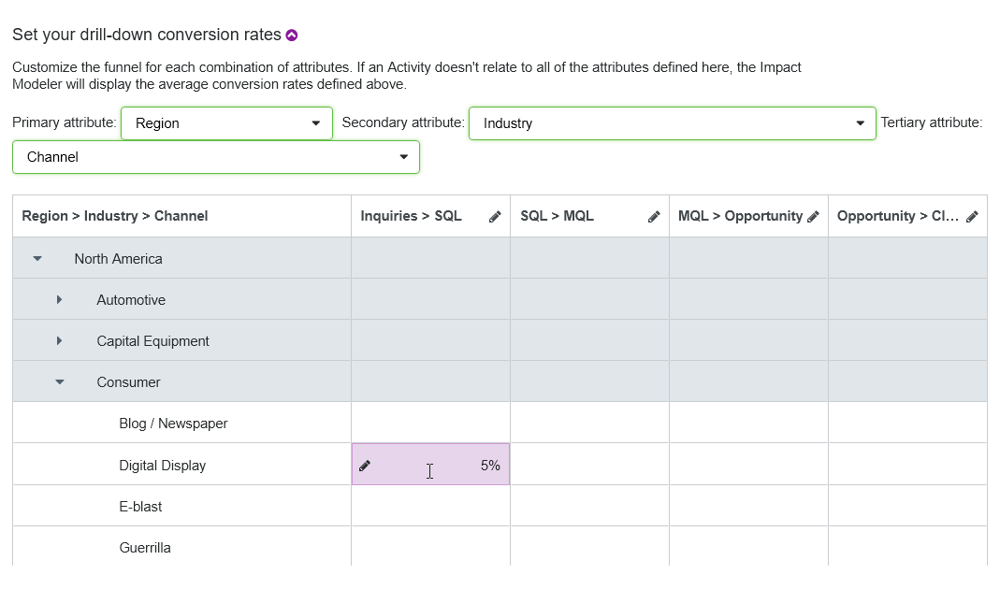

As an administrator, you must configure the demand generation funnel model to enable Impact Modeler for your organization. The funnel model consists of the following parts:
The structure of your organization's demand generation funnel. This consists of the stages that you track as customers move through the sales pipeline, from lead to closed/won deal.
General funnel performance assumptions. This includes typical conversion rates (the rate at which leads move from one funnel stage to the next), velocities (how fast they move between stages), and the average value of a closed/won deal.
Scenario-based overrides to the default assumptions. These provide alternative, more specific funnel performance assumptions based on activity attributes. For example, you can set overrides for scenarios such as if the average deal size for a certain product is higher or lower, or if deals in a particular market close faster (or slower) than average.
How the demand generation funnel model works
The following screenshot shows a default setup of a demand generation funnel model in Campaign Management:
The funnel model is defined by the following properties:
Stages
A stage represents a step in the customer's journey towards making a purchase. A funnel usually has 2 to 10 stages, depending on your marketing and sales processes.
Conversion rates
Represents the percentage of inquiries that reach the next stage.
Velocity
The average number of days it takes a lead to progress from one funnel stage to the next.
Average deal size
The average revenue generated for closed opportunities (B2B), or the average order size (B2C).
When a user enters a planned number of inquiries for an activity, the model calculates when to expect what number of inquiries and what projected revenue based on above funnel information.
Scenario-based overrides
Conversion rates, velocity, and average deal size may not be identical for every activity. You can define overrides for these activities. The overrides are applied to activities by defining scenarios based on one or more activity attributes.
The following example shows overrides that are defined according to Business Unit as the primary attribute and Product as a secondary attribute:
Example 1: Conversion rate overrides
The default funnel definition for the Inquiries to MQL conversion rate is set to 40%:
But when an activity is assigned to B2B-Direct business unit and Product A, then project revenue is calculated with conversion rate of 55%. For Product B within that business unit, the conversion rate for this stage is set to 45%. Meanwhile, the VR set product uses the default conversion rate.
Example 2: Velocity overrides
The default funnel definition for the Inquiries to MQL velocity is set to 5 days:
But when an activity is assigned to Economic Buyer persona, then project revenue is calculated with velocity of 10 days. For Internal Influencer activities the default velocity is used.
Example 3: Average deal size overrides
The default average deal size is set to $10,000:
But when an activity is assigned to the Enterprise customer segment and Product A, then project revenue is calculated with different average deal sizes for Canada ($12,000), Mexico ($9,000) and Germany ($15,000). For USA and UK, the default average deal size is used.
Set up your demand generation funnel model
Configuration overview
To use the impact modeling features, you must set up your funnel model. The setup process consists of the following steps:
Set up funnel stages: Define the stages of your funnel.
Set default performance metrics: Specify the average conversion rate and velocity between each stage, and the average deal size, to use for revenue projections.
Configure per-stage revenue tracking (optional): Choose if you want to track projected revenue at stages of the funnel other than the last stage.
Set scenario-specific performance metrics (optional): Specify custom conversion rates, velocities, and deal sizes to use for particular scenarios.
Open the Impact Modeler settings
You can configure all settings related to the Impact Modeler funnel from the Impact Modeler Setup page in Activity Configuration.
In the Uptempo navigation menu, click Activities.
In the Activities section, click Settings. The Activity Configuration page opens.
On the Activity Configuration page, click Measures > Impact Modeler. The Impact Modeler Setup page is shown.
Set up funnel stages
The first step in configuring the Impact Modeler funnel is to set up the stages of the funnel. By default, the funnel starts with only two stages: Source and Won.
The exact number of stages (and their names) that you set up depend on how your organization defines the customer journey, and tracks progress through the funnel.
Configure funnel stages
On the Impact Modeler Setup page, click + Add Stage. A new row is added to the funnel stage configuration table, and the new funnel stage is added to the funnel diagram.
By default, newly added stages are named New Stage. To edit the name of a stage, click on its name under the Funnel Stage column. Type the name you want to use into the field, then click anywhere outside the field to finish editing.
Repeat steps 1-2 until you have added and named all the funnel stages you want to use.
To save and apply your changes, click Save.
The page reloads, and your changes to the funnel take effect immediately.
Set up default performance metrics
After you have set up the stages of your funnel, the next step is to define the average stage-to-stage performance and deal size that Impact Modeler uses to generate revenue projections. There are three metrics you need to define:
Average Conversion Rate
The rate at which leads move from one stage to the next on average. For example, if out of 100 unqualified leads you typically generate 25 MQLs, that's a 25% conversion rate between those stages.
Average Velocity
The average time, in days, that a lead takes to move from one stage to the next.
Average Deal Size
The average amount of revenue generated when you close a deal and successfully convert an opportunity into a customer.
You specify the average conversion rate and average velocity individually per stage. The average deal size only applies to the final stage, so you only set it once.
Configure the funnel's default performance metrics
On the Impact Modeler Setup page, enter the average deal size you want to use for projections in the Set your default average deal size field.
Use the funnel stage configuration table to set the default conversion rates and velocities.
Under the Conversion Rate column, click on a row to edit the conversion rate. Enter the conversion rate (as a percentage) from the selected stage to the next stage, then click anywhere outside the field to finish editing. The new rate you set is immediately reflected in the funnel diagram: 
Under the Velocity (Days) column, click on a row to edit the velocity. Enter the velocity (in days) from the selected stage to the next stage, then click anywhere outside the field to finish editing.
Repeat the previous step for each funnel stage listed in the table (except the final stage, where these metrics are not applicable).
To save and apply your changes, click Save.
The page reloads, and your changes to the funnel take effect immediately.
Optional: Configure per-stage revenue tracking
By default, Impact Modeler tracks revenue only at the final stage of the funnel (for closed deals). If you want to see pipeline projections, you can optionally turn on revenue tracking for any other funnel stage. For each stage where revenue tracking is enabled, you can set a custom label for the stage's revenue to reflect the terminology your organization uses for projections at that stage (for example, "Pipeline" or "Bookings").
When revenue tracking is turned on for a funnel stage, projections are displayed on the details panel of all activities where Impact Modeling is enabled, under the Impact section:
On the Planned tab, the funnel chart displays a revenue projection for each stage where revenue tracking is enabled, under its custom label (if specified).
On the Actual tab displays columns for manually entering stage-specific revenue in the actuals input table, also using the custom label.
Enable revenue tracking for a funnel stage
On the Impact Modeler Setup page, find the stage for which you want to enable revenue tracking in the table.
To enable revenue tracking for a stage, select the checkbox in the Track Revenue column for that stage: 
Optional: By default, the label for the stage's revenue figure is automatically set to " [Funnel Stage Name] Revenue" in the Revenue Label column. To change this label, click on the field in the Revenue Label column for a stage and type in the label you want to use: 
To save and apply your changes, click Save.
The page reloads, and your changes take effect immediately.
If you want to stop tracking revenue for a stage again and deselect the Track Revenue option for that stage, then click Save.
Set up scenario-specific performance metrics
The default performance metrics values are averages across all of your demand generation efforts. The accuracy of your Impact Modeler projections will be limited if you only use these values, especially if you see a lot of variability in conversion rate, velocity, and deal size when you look at different combinations of factors like location, prospect size, product type, etc.
To improve the precision of your Impact Modeler projections, you can define various scenarios, and assign custom performance metrics values to those scenarios. Whenever a given scenario applies, the model uses the more precise custom values to calculate revenue projections, instead of the default average values. For example, if you tend to see slower velocities but higher conversion rates and deal sizes with enterprise prospects, you can set up custom performance metrics values to refine the model's accuracy for this scenario.
In Impact Modeler, you define scenarios based on activity attribute values. For each performance metric, you can select up to three list-type activity attributes (Drop-Down List or Multi-Select List), then define a custom performance metric value for each combination of attribute values.
Example 1: One Attribute
If your primary scenarios are fairly straightforward, you can create them based on just one attribute.
Example scenario attribute:
Industry
Example attribute values:
Healthcare
Financial Services
Why:
Some industries have regulatory complexity that can significantly reduce velocity. For example, Financial Services and Healthcare can often have longer sales cycles due to regulatory compliance.
Example 2: Two Attributes
You can combine two attributes to create more granular scenarios. This is especially useful for attributes that are strongly correlated in terms of their impact on the funnel.
Example scenario attributes:
Product + Geography
Example attribute value combinations:
Product A + North America
Product A + APAC
Why:
Budgets and product-market fit can vary regionally. For example, a product might have a higher average deal size in North America, or prospects for that product in APAC might take longer to go from SQL to Opportunity.
Example 3: Three Attributes
If your organization has a lot of high-quality historical performance data and the ability to analyze it in depth, you can use up to three attributes to capture the most granular scenarios.
Example scenario attributes:
Product + Geography + Channel
Example attribute value combinations:
Product A (SMB) + North America + Paid Search
Product B (Enterprise) + North America + Event
Why:
You might find that certain key attributes drive very large variances in funnel peformance metrics. For example, digital ads for an SMB-focused product in North America might generate few MQLs from a lot of inquiries, but lead to a short sales cycles for comparatively small deal sizes.
By contrast, in-person events like trade shows might drive much higher conversion rates (and larger deal sizes) for an Enterprise-focused product in the same market.
Configure custom performance metrics for attribute-based scenarios
On the Impact Modeler Setup page, click the section Set your drill-down conversion rates to expand it.
Use the Primary attribute menu to select the first attribute you want to use to define the scenario for conversion rates. A table is displayed that has rows for each of the values in the selected attribute, and columns for each of the transitions between stages in your funnel.
Optional: Use the Secondary attribute and Tertiary attribute menus to select additional attributes to define the scenario for conversion rates. When you select more than one attribute, every combination of values from the selected attribute is added to the table as a row: 
To set a custom conversion rate for an attribute value (or value combination), find the cell where its row intersects with the column for the stage transition for which you want to set the conversion rate. Click the cell to edit it, type in the conversion rate you want, then click anywhere outside the cell to finish editing.
Optional: Repeat step 4 for any other attribute value (or value combination) and stage transition for which you want to set a custom conversion rate.
Click on the section Set your drill-down velocities and repeat steps 2-5 to set custom velocities for stage transitions and attribute value pairs.
Click on the section Set your drill-down deal sizes and repeat steps 2-5 to set custom deal sizes for stage transitions and attribute value pairs. As the average deal size only applies to the last stage in the funnel, there is only one column you can edit in the table for custom deal sizes.
To save and apply your changes, click Save.
The page reloads, and your changes take effect immediately. On all activities that have attribute values for which you have specified a custom conversion rate, velocity, or deal size, the custom value is used in the activity's details panel >Impact section.


 Activities.
Activities. Settings. The Activity Configuration page opens.
Settings. The Activity Configuration page opens.{kind=link}
{kind=link}